Guía de presentación — qué se pidió, qué cambió, cómo se usa paso a paso y qué queda para la segunda parte
En el ticket 720, sobre la tabla de Tesorería → Movimientos de Fondos, pediste:
"Eliminar la columna de número de asiento contable. Mostrar un detalle de los movimientos, con un botón de ver y el mismo form con los campos en disable." Ticket 720 — Tabla Movimientos de Fondos
En el mismo ticket pediste además dos cosas más grandes: crear tipos de movimientos de fondos y que la tabla se alimente desde los movimientos del banco. Esas dos quedan para una segunda parte (ver el punto 6).
El ticket 726 no lo pediste vos: lo detectamos nosotros probando el sistema en el celular. Al abrir el formulario de un movimiento de fondos en un teléfono, el formulario se salía de la pantalla: quedaba cortado a la derecha, la X para cerrarlo no se veía y la pantalla se desplazaba hacia los costados.
La tabla tenía una columna Asiento con el número (o "—"). Un movimiento confirmado no tenía ningún botón: no había forma de volver a ver, por ejemplo, los conceptos de un gasto bancario ya confirmado.
La columna Asiento ya no está. Cada fila tiene el menú ⋯ con la opción Ver, en cualquier estado: Borrador, Confirmado o Anulado. El número de asiento se consulta desde Ver.
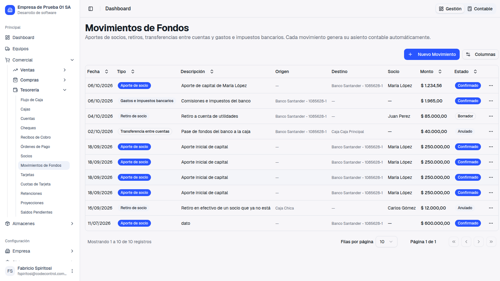
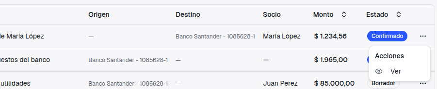
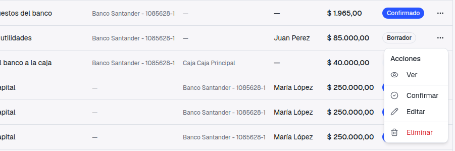
Ejemplo: querés revisar qué conceptos tenía el débito del banco que confirmaste y con qué número de asiento quedó.
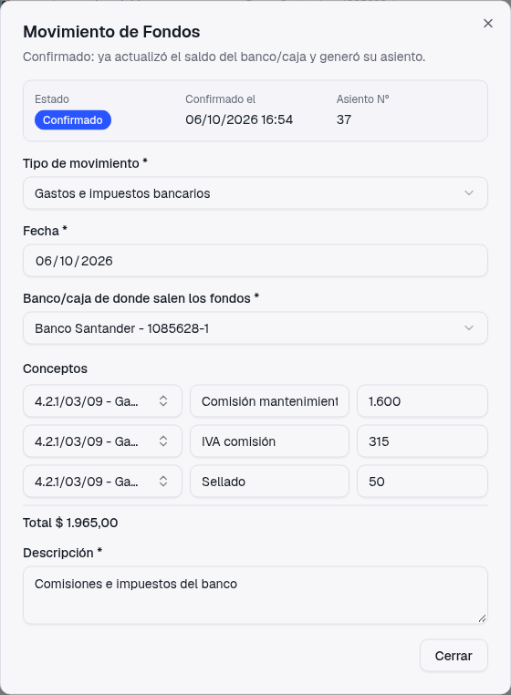
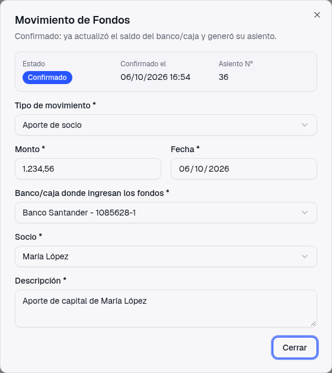
Debajo del título, una frase te dice en qué situación está el movimiento: "Borrador: todavía no movió saldos ni generó asiento.", "Confirmado: ya actualizó el saldo del banco/caja y generó su asiento." o "Anulado: el movimiento quedó sin efecto."
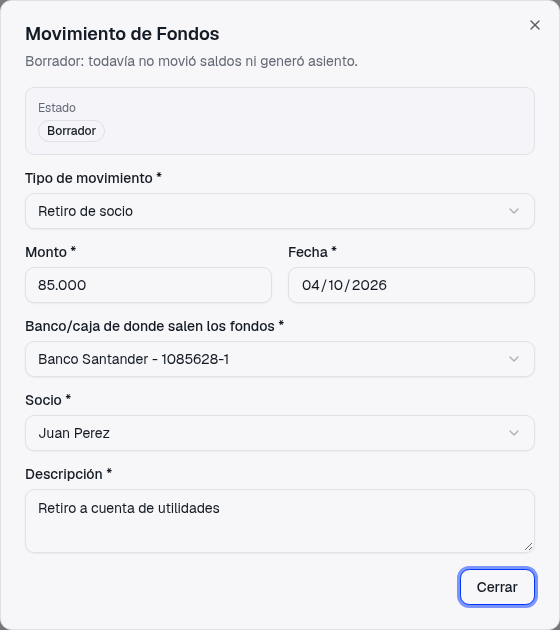
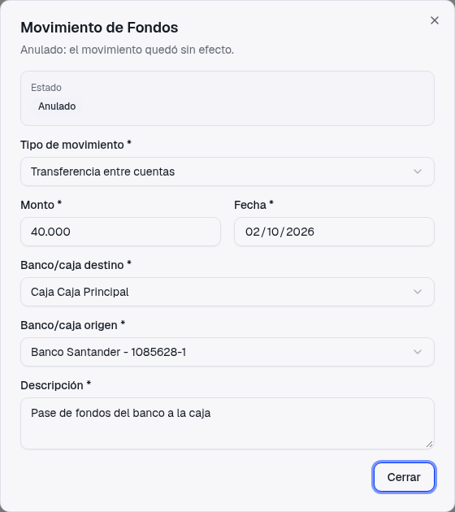
Si después de cargar el movimiento la caja cerró su sesión o el socio se dio de baja, al verlo se sigue mostrando el nombre que quedó guardado (en la captura, "Caja Chica" y "Carlos Gómez"), en lugar de un campo vacío.
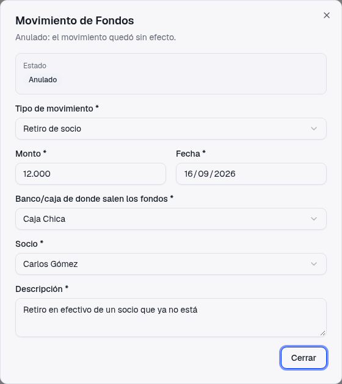
Ahora el formulario entra completo en la pantalla del teléfono: la X de cerrar se ve, y la pantalla ya no se desplaza hacia los costados. Vale para cargar, editar y ver, con los cuatro tipos de movimiento.
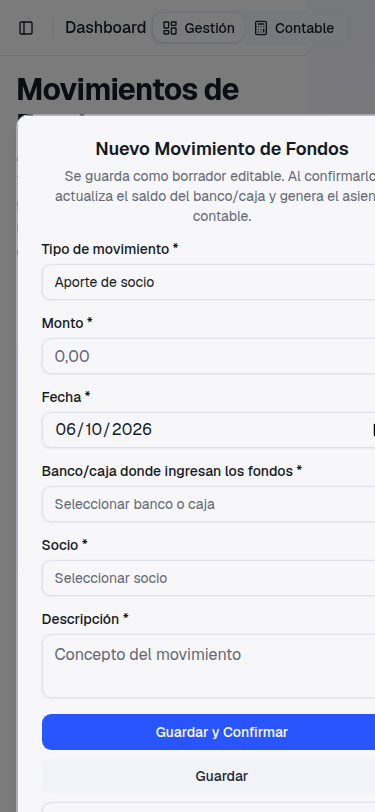
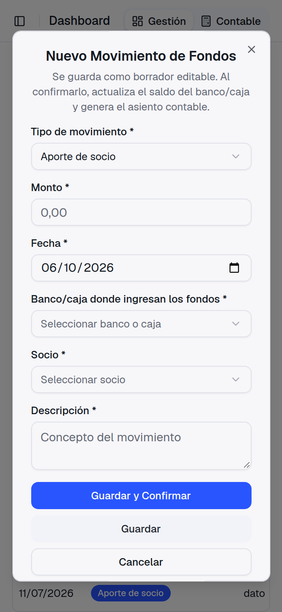
Antes, en el celular, la fila de cada concepto ponía todo en una línea y la cuenta contable quedaba tan angosta que no se leía. Ahora la cuenta ocupa toda la fila y debajo van la descripción, el importe y el tacho.
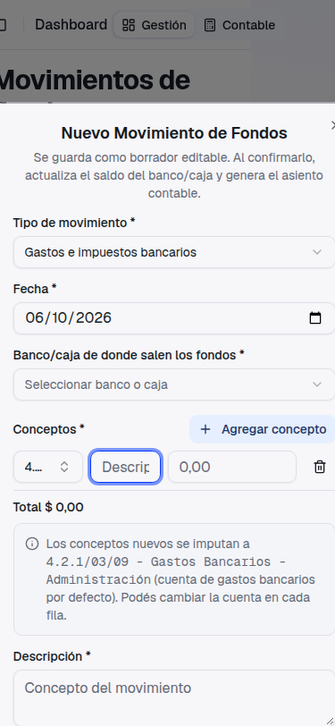
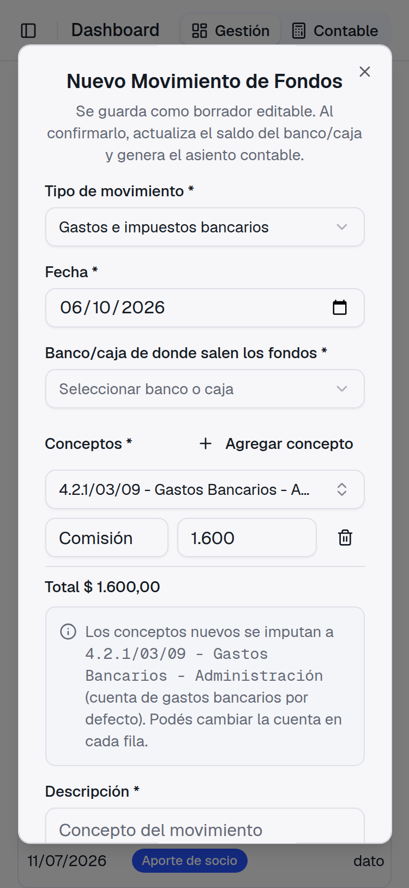
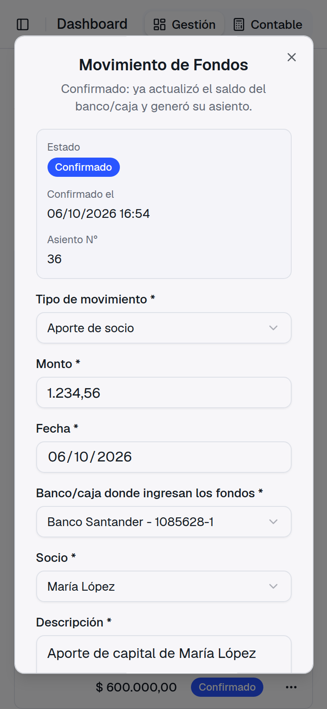
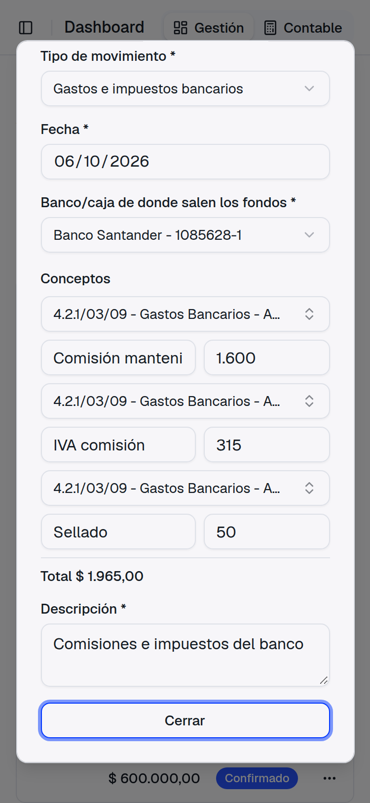
El problema venía de la parte de abajo de la tabla (la que dice "Filas por página" y "Página 1 de 1"): no se acomodaba al ancho del teléfono y ensanchaba toda la pantalla. Ahora se reparte en varias líneas. La tabla se desliza con el dedo para ver todas las columnas. Este arreglo vale para todas las tablas del sistema, no solo esta; en la computadora se ven igual que antes.
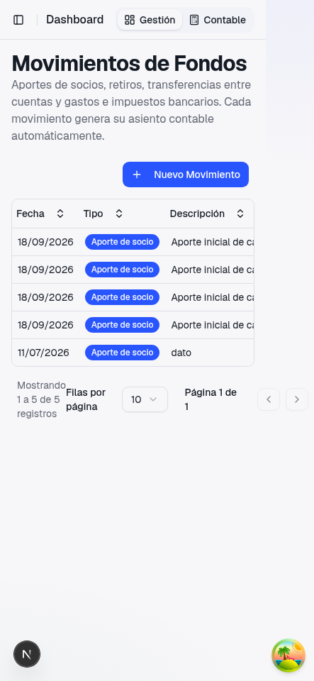
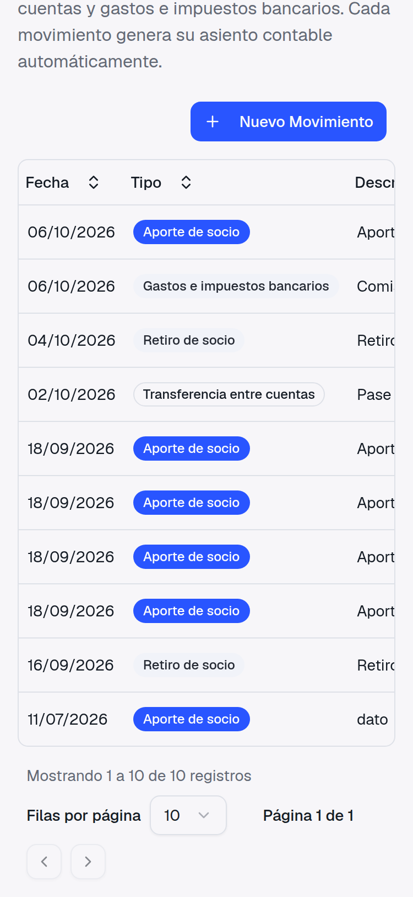
Las otras dos cosas del ticket 720 quedan para una segunda entrega, porque necesitamos que nos respondas las preguntas que dejamos en el ticket antes de diseñarlas:
Lo que entregamos ahora no condiciona esas decisiones: el formulario y "Ver" van a funcionar igual con los tipos nuevos que se definan.